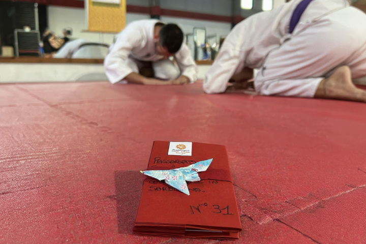

Data da definire
Festival Cultura giapponese in Sardegna
2026 · Sardegna
Un evento dedicato alla cultura e alle tradizioni del Giappone, con la partecipazione del Ninniku Dojo e una lezione aperta sul Budō giapponese. La data è ancora da definire.
Informazioni sul Festival →